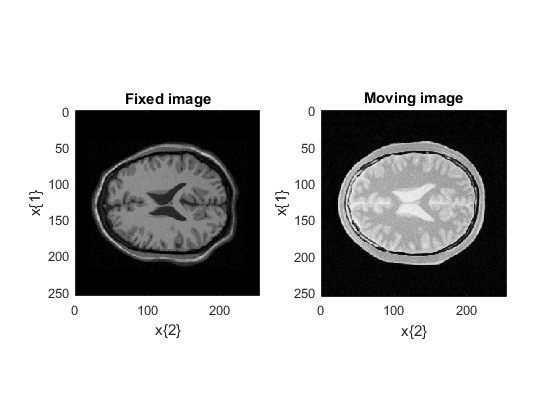

Elastix example in Matlab
This Matlab script shows how to reproduce with ElastixFromMatlab the Elastix example provided with the source code. Before running that script, you must
- understand Elastix
- be familiar with the Elastix example
- be familiar with Matlab
- have installed elastix on your computer and have successfully run the function elxTestDefaultConfiguration.
Contents
- Load the ElastixFromMatlab configuration
- Test elastix version
- Test myConf.ExampleInputDirectory
- Load the fixed and moving image into Matlab
- Show the fixed and moving images
- Configure the Euler transform
- Configure the BSpline transform
- Run Elastix
- Display the registered images and the metrics at each resolution
- Compare with the expected result
- What about the Log structure?
- Elastix and masks
- Apply the deformation to the moving mask and compute the determinant of the jacobian
- License
Load the ElastixFromMatlab configuration
myConf = elxDefaultConfiguration;
Feel free to adjust the settings in
- elxDefaultConfiguration which is the system wide default configuration file
- elxUserDefaultConfiguraiont which is the user default configuration file (If this last function exists and is in your path, it is called by elxDefaultConfiguration).
In those files, you may adjust:
- StrConf.InputDirectory: directory where all elastix inputs are transparently written
- StrConf.OutputDirectory: directory where all elastix outputs are transparently read
- StrConf.ElastixProgram: the name of elastix program
- StrConf.TransformixProgram: the name of the transformix program
- StrConf.ExampleInputDirectory: directory of the example provided by elastix. The default value is '' and must be adjusted to run that example.
You probably do not need to adjust the other fields which are filenames skeletons.
Test elastix version
[Status, ErrorMessage] = elxTestElastixVersion(myConf); if ~Status error(ErrorMessage); end
Test myConf.ExampleInputDirectory
if strcmp(myConf.ExampleInputDirectory, '') error(['Please set myConf.ExampleInputDirectory' ... ' in elxDefaultConfiguration.m to the full name of the exampleinput' ... ' elastix directory. You can also or create your own ' ... ' elxUserDefaultConfiguration.m function to set this field.']); end
Load the fixed and moving image into Matlab
Dim is the space dimension (usually 2 or 3). elxMetaIOFileToStrDatax reads an mhd file and return in Matlab an image structure. The mhd format is the default format used by ElastixFromMatlab
Dim = 2; FixedImageFilename = fullfile(myConf.ExampleInputDirectory, 'fixed.mhd'); MovingImageFilename = fullfile(myConf.ExampleInputDirectory, 'moving.mhd'); if ~exist(FixedImageFilename, 'file') || ~exist(MovingImageFilename, 'file') error(['The FixedImageFilename (%s) or MovingImageFilename (%s) do not exist.' ... ' Are you sure the dir_exampleinput directory(%s) point to the exampleinput', ... ' directory of the Elastix example ?'], FixedImageFilename, ... MovingImageFilename); end FixedImage = elxMetaIOFileToStrDatax(FixedImageFilename); MovingImage = elxMetaIOFileToStrDatax(MovingImageFilename);
FixedImage and MovingImage have the folloxing fields:
- Data : the pixel values on a regular grid.
- x : a cell of Dim vectors describing the position of the pixels along each dimension. So x{k} has size(Data, k) elements. The x{k} are regularly increasing sequences.
Show the fixed and moving images
figure(1); colormap gray
subplot(1, 2, 1);
Note that we have to flip the vectors x{k} when displaying images, because when Matlab displays an image the x-axis is along the rows, and y-axis along the columns.
imagesc(FixedImage.x{[2 1]}, FixedImage.Data, [0 255]);
xlabel('x\{2\}')
ylabel('x\{1\}');
title('Fixed image');
axis image;
subplot(1, 2, 2);
imagesc(MovingImage.x{[2 1]}, MovingImage.Data, [0 255]);
title('Moving image');
xlabel('x\{2\}');
ylabel('x\{1\}');
axis image;
 We perform a registration by doing sequentially:
- a rigid registration with the Euler Transform
- a bspline registration
So let us start definig those transforms.
Configure the Euler transform
First get a set of default values for the Euler Transform. Param is a cell array of structure because different transforms may need different fields.
Param{1} = elxDefaultParameters('EulerTransform', Dim);
Now, add or overwrite parameters. To add a new parameter, add a field to the structure. Beware of the field names which are not checked: If you misspell a parameter name, then elastix may use a default value for the intended parameter.
Param{1}.FixedImagePyramid = 'FixedRecursiveImagePyramid';
Param{1}.MovingImagePyramid = 'MovingRecursiveImagePyramid';
Param{1}.Metric = 'AdvancedMattesMutualInformation';
Param{1}.AutomaticScalesEstimation = true;
Param{1}.AutomaticTransformInitialization = true;
Param{1}.NumberOfHistogramBins = 32;
Param{1}.NumberOfResolutions = 4;
Param{1}.ImageSampler = 'Random';
Param{1}.MaximumuNumberOfIterations = 250;
Param{1}.FinalBSplineInterpolationOrder = 3;
Param{1}.DefaultPixelValue = 0;
Param{1}.ResultImagePixelType = 'short';
Configure the BSpline transform
Param{2} = Param{1};
Param{2}.Transform = 'BSplineTransform';
Param{2}.FinalGridSpacingInPhysicalUnits = 16;
Run Elastix
The following command
- writes the fixed and moving image in myConf.InputDirectory as well as the parameter configuration files.
- constructs the elastix command line
- runs elastix
- loads the registered moving images into the struct array RegMoving
- load the transforms into a cell array of structures Transforms
- parses the logs and create a structure Log
- returns Succes a flag equals to one if elastix succeeded
- returns ErrorMessage a cell of strings.
[RegMoving, Transforms, Log, Success, ErrorMessage] = elxElastix(myConf, ...
Param, FixedImage, MovingImage);
Warning: Escaped character '\m' is not valid. See 'doc sprintf' for supported special characters. Warning: Escaped character '\m' is not valid. See 'doc sprintf' for supported special characters. Warning: Escaped character '\m' is not valid. See 'doc sprintf' for supported special characters. Warning: Escaped character '\m' is not valid. See 'doc sprintf' for supported special characters.
Did elastix succeed?
if Success disp('ok elastix succeeded.'); else error('elastix failed. This is embarassing.'); end
Error using elxExampleElastix (line 154) elastix failed. This is embarassing.
Display the registered images and the metrics at each resolution
for cpt = 1:2
figure(1 + cpt); colormap gray subplot(2, 1, 1); imagesc(RegMoving(cpt).x{[2 1]}, RegMoving(cpt).Data, [0 255]); title(Transforms{cpt}.Transform); if cpt == 1 disp('Euler transform parameters:'); Transforms{cpt}.TransformParameters else disp('The first 10 BSpline transform parameters') Transforms{cpt}.TransformParameters(1:10) end axis image; subplot(2, 1, 2); plot([Log.ParameterFile(cpt).Resolution(:).Metric]) xlabel('Iteration #'); ylabel('Metric'); legend('Resolution 0', 'Resolution 1', 'Resolution 2', 'Resolution 3');
end
Compare with the expected result
To compare the two image, we construct a Mosaic image.
SizeOfTiles = [16 16]; ExpSol = elxMetaIOFileToStrDatax(fullfile(myConf.ExampleInputDirectory, ... 'solution_deformedmovingimage.mhd')); figure(4); colormap(gray); MMask = elxMosaicImageMaskOfRectangles(size(RegMoving(2).Data), SizeOfTiles, [0 0]); MImage = elxMosaicImage(MMask, RegMoving(2).Data, ExpSol.Data); imagesc(RegMoving(2).x{[2 1]}, MImage, [0 256]); axis image; xlabel('x\{2\}'); ylabel('x\{1\}'); title('Mosaic of the computed and expected images');
What about the Log structure?
Log.Command
Elastix and masks
In the following we mask the input images to prevent background pixels to be taken into account. So first load the mask, and then add to elastix the fixed and moving image masks.
FixedMask = elxMetaIOFileToStrDatax(fullfile(myConf.ExampleInputDirectory, ... 'mask_fixed.mhd')); MovingMask = elxMetaIOFileToStrDatax(fullfile(myConf.ExampleInputDirectory, ... 'mask_moving.mhd')); [RegMovingWithMask, Transforms, Log, Success, Message] = elxElastix(myConf, ... Param, FixedImage, MovingImage, 'FixedMask', FixedMask, 'MovingMask', MovingMask);
Apply the deformation to the moving mask and compute the determinant of the jacobian
After doing the registration, we could apply the found deformation to the moving mask. In that case, it would be necessary to change the FinalBSplineInterpolationOrder to 0 first (see Elastix manual) in the BSplineTransform.
Transforms{2}.FinalBSplineInterpolationOrder = 0;
Transformix can also be used to generate a deformation field, or the determinant of the jacobian of the deformation field (which indicates the amount of compression/expansion.
[TrxOut, Log, Success, Message] = elxTransformix(myConf, Transforms, ... 'Image', MovingMask, 'DeterminantOfSpatialJacobian', true);
transformix is a rather versatile command that can return several outputs. So each field of TrxOut is one of those results.
TMovingMask = TrxOut.TransformedImage;
DJacob = TrxOut.DeterminantOfSpatialJacobian;
figure(5); colormap(gray);
subplot(1, 2, 1);
imagesc(MovingMask.x{[2 1]}, MovingMask.Data);
axis image;
title('Moving mask');
subplot(1, 2, 2);
imagesc(TMovingMask.x{[2 1]}, TMovingMask.Data);
axis image;
title('Deformed moving mask');
figure(6); colormap(gray);
imagesc(DJacob.x{[2 1]}, DJacob.Data);
title('Determinant of spatial Jacobian');
axis image;
License
Copyright (C) CNRS and Riverside Research Contributors: Alain CORON, Jonathan MAMOU (2010)
alain.coron@upmc.fr, JMamou@riversideresearch.org
This software is a computer program whose purpose is to effectively register images within Matlab (http://www.mathworks.com) with elastix (http://elastix.isi.uu.nl/), an open-source image-registration software.
This software was supported in part by NIH Grant CA100183, the Riverside Research Biomedical Engineering Research Fund, and CNRS.
This software is governed by the CeCILL-B license under French law and abiding by the rules of distribution of free software. You can use, modify and/ or redistribute the software under the terms of the CeCILL-B license as circulated by CEA, CNRS and INRIA at the following URL "http://www.cecill.info".
As a counterpart to the access to the source code and rights to copy, modify and redistribute granted by the license, users are provided only with a limited warranty and the software's author, the holder of the economic rights, and the successive licensors have only limited liability.
In this respect, the user's attention is drawn to the risks associated with loading, using, modifying and/or developing or reproducing the software by the user in light of its specific status of free software, that may mean that it is complicated to manipulate, and that also therefore means that it is reserved for developers and experienced professionals having in-depth computer knowledge. Users are therefore encouraged to load and test the software's suitability as regards their requirements in conditions enabling the security of their systems and/or data to be ensured and, more generally, to use and operate it in the same conditions as regards security.
The fact that you are presently reading this means that you have had knowledge of the CeCILL-B license and that you accept its terms.
$Id: elxExampleElastix.m 2 2012-04-27 19:42:47Z coron $